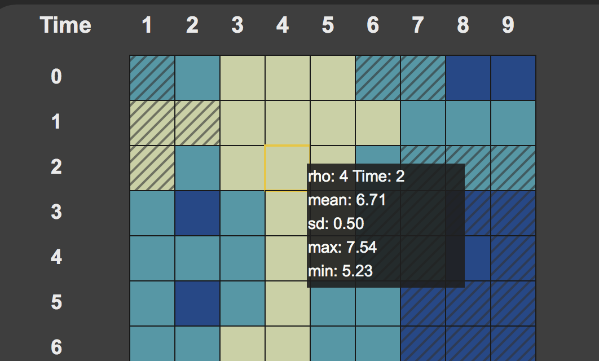

<div id="single-portfolio">
	<div id="portfolio-details" class="container">
		<a class="close-folio-item" href="#"><i class="fa fa-times"></i></a>
		
		<div class="row">
			<div class="col-sm-9">
				<div class="project-info">
					<h3>Heatmap</h3>
					<p>We applied K-Means clustering across 25,000 time steps for each “Donut” (rho band) using all 2166 degrees as features. In order to perform k-means clustering on this data we decided to first reduce the dimensions by performing Principal Component Analysis (PCA) on the scaled features for each rho band cross section. Once we reduced the dimensions using PCA, we performed K-Means on the resulting principal components. We chose three clusters to represent high, median and low density.</p>
					<p>The heatmap shows the cluster at each rho and timestep. Anomalies are marked in grey according to the algorithm chosen. Click on the grids to see the corresponding donut plots and hover over the grids to see the statistics of the donut.</p>

				</div>
			</div>
			<div class="col-sm-3">
				<div class="project-details">
					<h3>Heatmap Details</h3>
					<p><span>Cluster: </span>Three clusters/colors (yellow, cyan, blue) representing high, median and low density for all nine rhos</p>
					<p><span>Hover:</span> Show statistics of the donut.</p>
					<p><span>Anomaly:</span> Anomalies are marked in texture according to the algorithm chosen.</p>
				</div>
			</div>
		</div>
	</div>
</div>
